OmnAIScope: Fahrzeugdiagnose am Motor
Präzise, einfach, machbar
Oszilloskope früher
Seit 1897 in Betrieb und doch kaum im Alltag vertreten, weshalb?
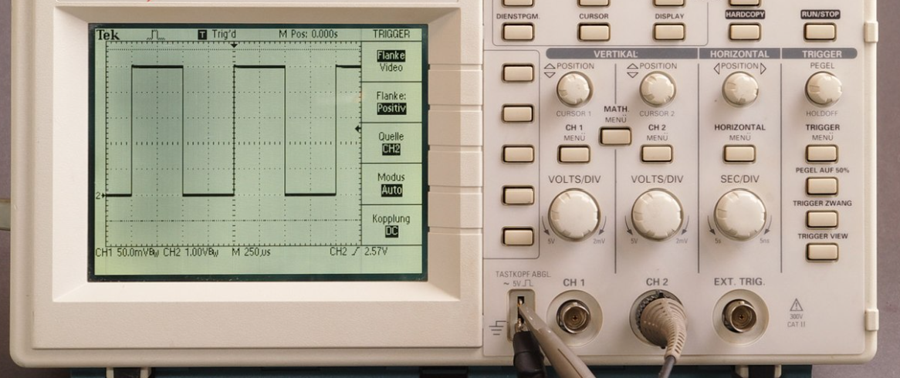Nachteile an alten Oszilloskopen
- Groß, schwer, sperrig
- Komplizierte Bedienung, Triggereinstellung: ein Muss
- Keine digitale Datenspeicherung
- Schnell kaputt
- Aufwendige Diagnose – Kein direkter Datenexport möglich
- Keine Analyse-Software – Keine moderne Schnittstelle zur Auswertung
- Daten können nicht wieder aufgerufen werden
- Hohes Maß an Vorkenntnissen nötig
Das OmnAIScope
Das Oszilloskop von heute, für die Hosentasche
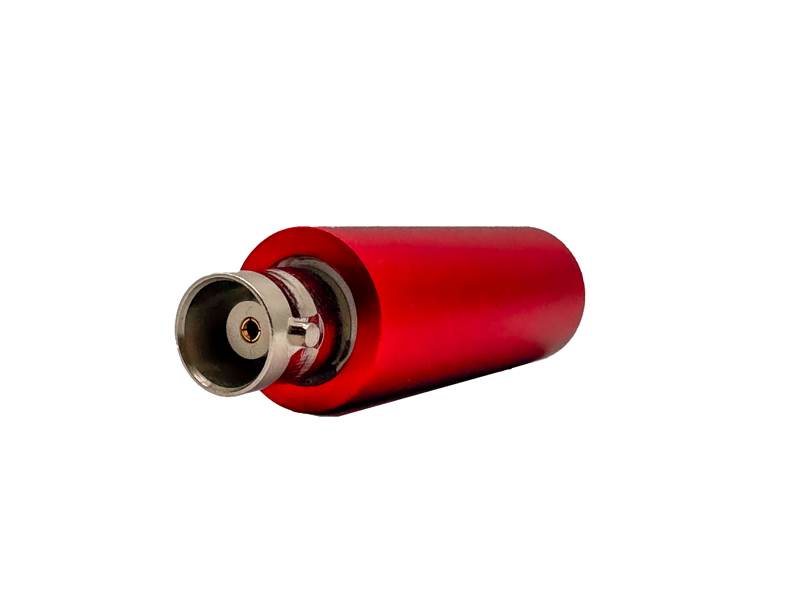
 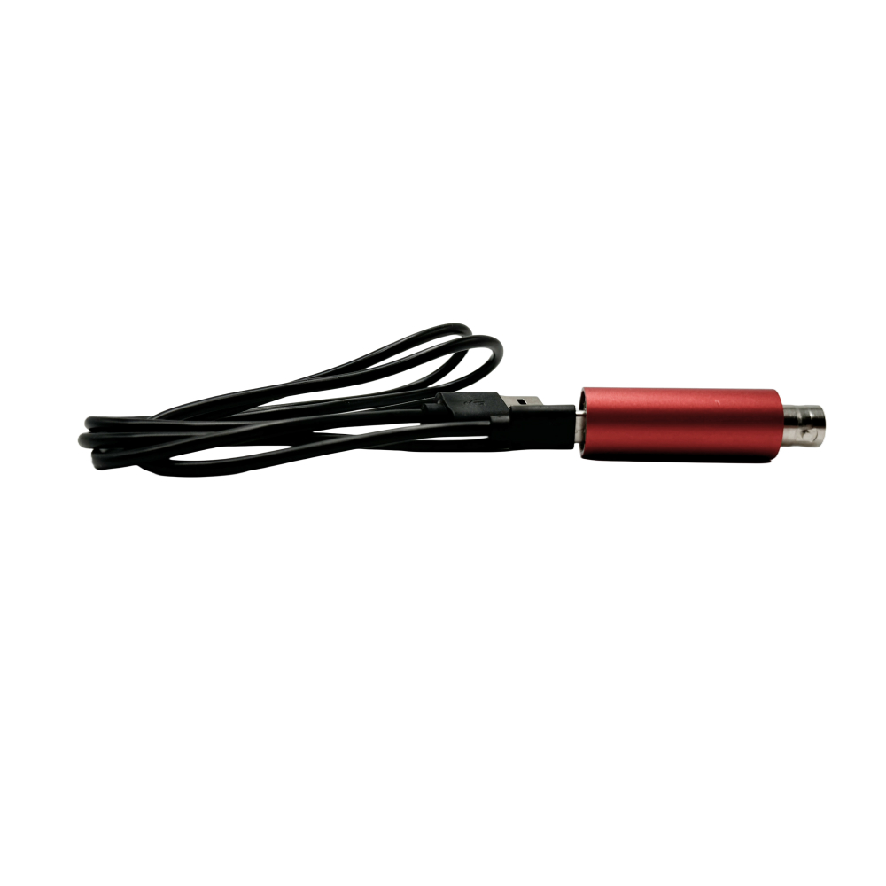
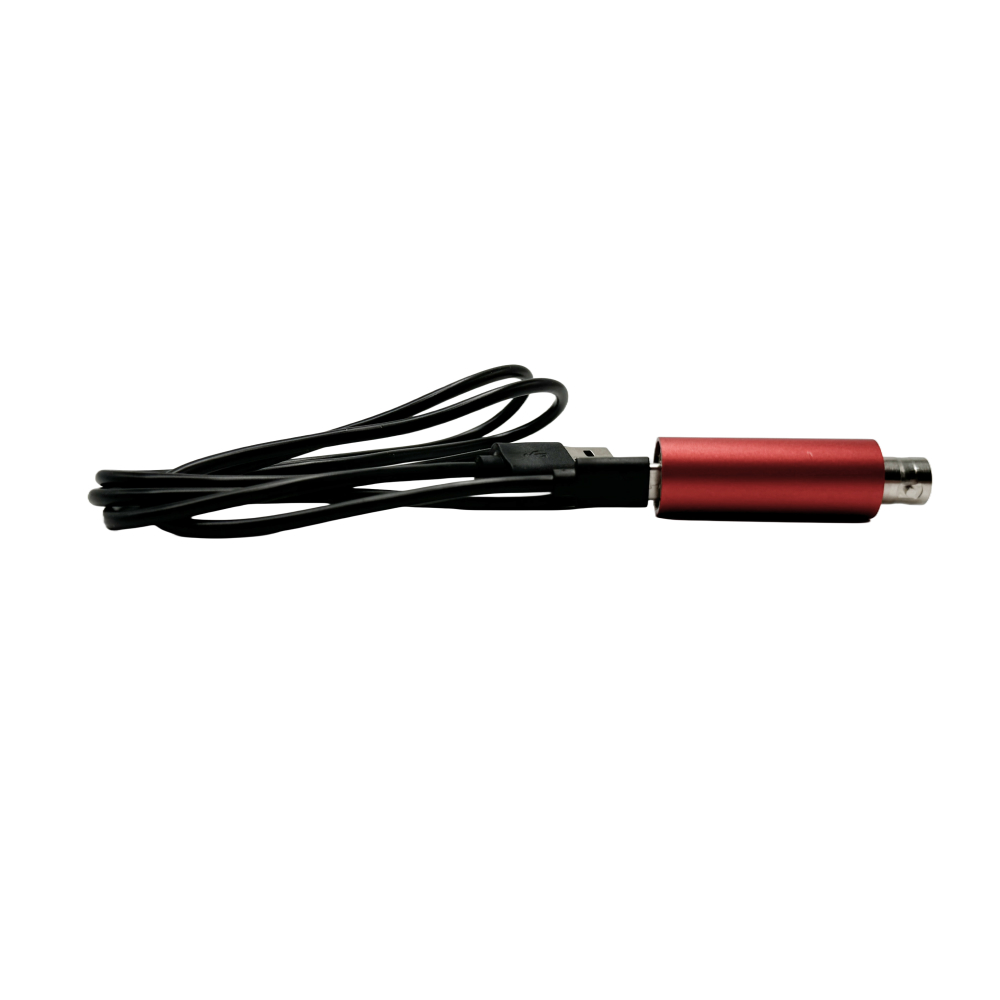
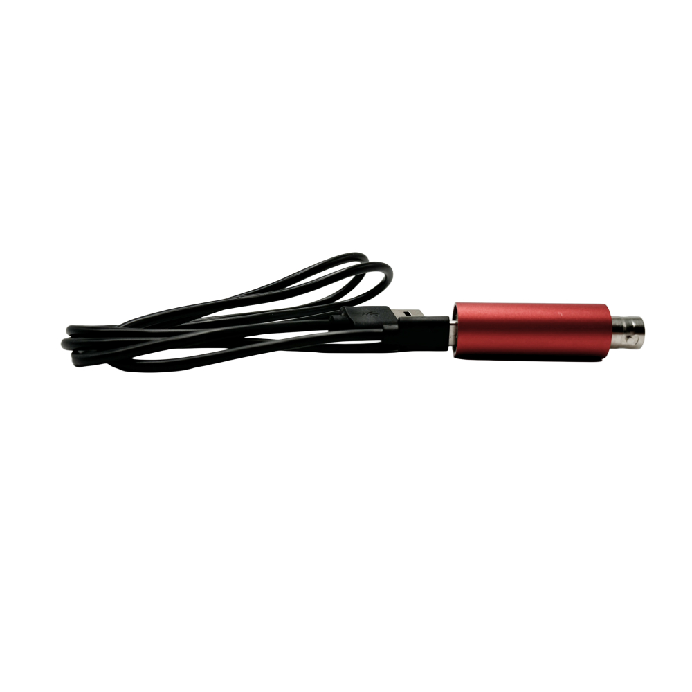
Der Unterschied zu früher

Technische Daten
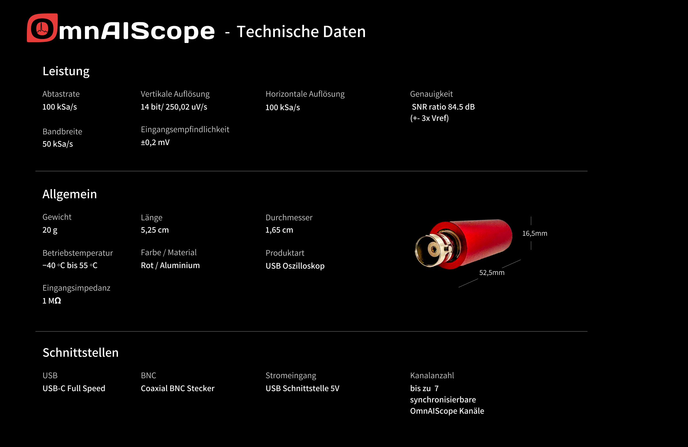Doch warum Analyse direkt am Motor?
Das Problem mit der aktuellen Fahrzeuganalyse
Der aktuelle Diagnoseprozess
Fehlercodes geben nur einen groben Rahmen wo der Fehler liegt
graph TD;
A[Kunde kommt mit defektem Auto] --> B[Werkstatt liest Fehlercode aus];
B --> C{Möglichkeiten};
C -->|Teil austauschen| D[Hoher Kostenaufwand];
D --> E[1 Woche später - Fehler nicht behoben];
E --> F[Kunde unzufrieden];
F --> A;
classDef error fill:#D9534F,stroke:#fff,stroke-width:2px,color:#fff;
classDef warning fill:#F0AD4E,stroke:#fff,stroke-width:2px,color:#fff;
class D error;
class E error;
class F error;
class C warning;
Der verbesserte Diagnoseprozess
graph TD;
A[Kunde kommt mit defektem Auto] --> B[Werkstatt liest Fehlercode aus];
B --> C{Möglichkeiten};
C -->|Teil austauschen| D[Hoher Kostenaufwand];
D --> E[1 Woche später - Fehler nicht behoben];
E --> F[Kunde unzufrieden];
F --> A;
C -->|Fehleranalyse| G[Werkstattmitarbeiter findet exakten Fehler];
G --> H[Er tauscht oder repariert das richtige Teil];
H --> I[Fehler überprüfbar];
I --> J[Einmalige geringere Ausgaben];
J --> K[Zufriedener Kunde];
classDef success fill:#44AA44,stroke:#fff,stroke-width:2px,color:#fff;
classDef process fill:#007BFF,stroke:#fff,stroke-width:2px,color:#fff;
class G process;
class H process;
class I success;
class J success;
class K success;
Das OmnAIScope als Fahrzeugdiagnosetool
Das Werkstattkonzept
graph TD; OmnAIScopes --> Server; Server -.-> Datenanzeige;
Server -.-> Speicher; Server -.-> Analyse; Analyse -.->
Datenanzeige; Datenanzeige -.-> Server;
Funktionalität im Prerelease
- Kompakt & mobil
- Einfache Bedienung
- Automatische Datenerfassung
- Steuerung per Laptop/Tablet
Die Zielgruppe im Prerelease
👨🔧 Werkstätten mit Erfahrung in Oszilloskopen
🔍 Für alle, denen der Aufwand mit einem normalen Oszilloskop zu hoch ist
Der Release des OmnAIScopes
Funktionalitätserweiterung im nächsten Jahr:
- 📱 Mobile Steuerung
- 🚗 Fahrbetrieb-Messungen – Aufnahmen während der Fahrt
- 💾 Speicher mit Gutbildern
- 🩺 Digitale Fahrzeugakte
- 📊 Einfache Analysen
Zielgruppe des Release:
- 🔧 Werkstätten, die noch nie mit Oszilloskopen gearbeitet haben
- 🔍 Werkstätten, die lieber reparieren statt ersetzen
- 👨🎓 Betriebe, die Azubis gezielt ausbilden möchten
- 💰 Werkstätten, die durch Messen Kosten sparen wollen
Die Zukunft von OmnAIScope
Die langfristige Version
- 📱 KI gestütze Fahrzeugdiagnose
- 🚗 Erweiterbare Diagnosegeräte – Temperatur, EFeld, Vibration alles über eine Software
- 💾 Intelligentes Supportsystem
Zielgruppe des OmnAIScopes auf lange Sicht
- 🔧 Von erfahrenen KFZ-Schraubern bis zu jungen Azubis
- Die Fahrzeugdiagnose ist nun für jeden einfach, günstig und machbar
Das OmnAIScope im Einsatz
 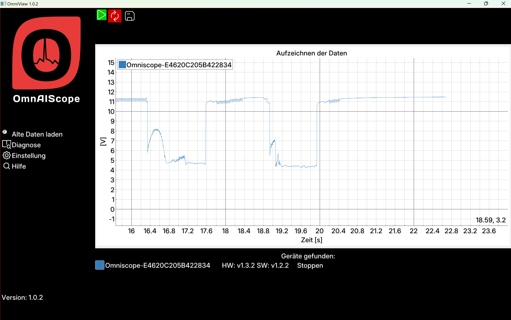
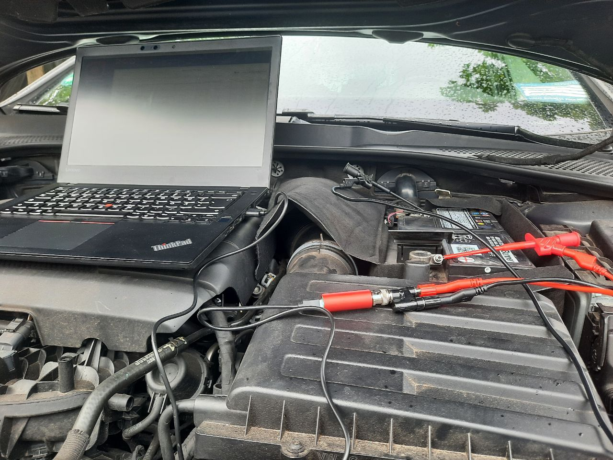
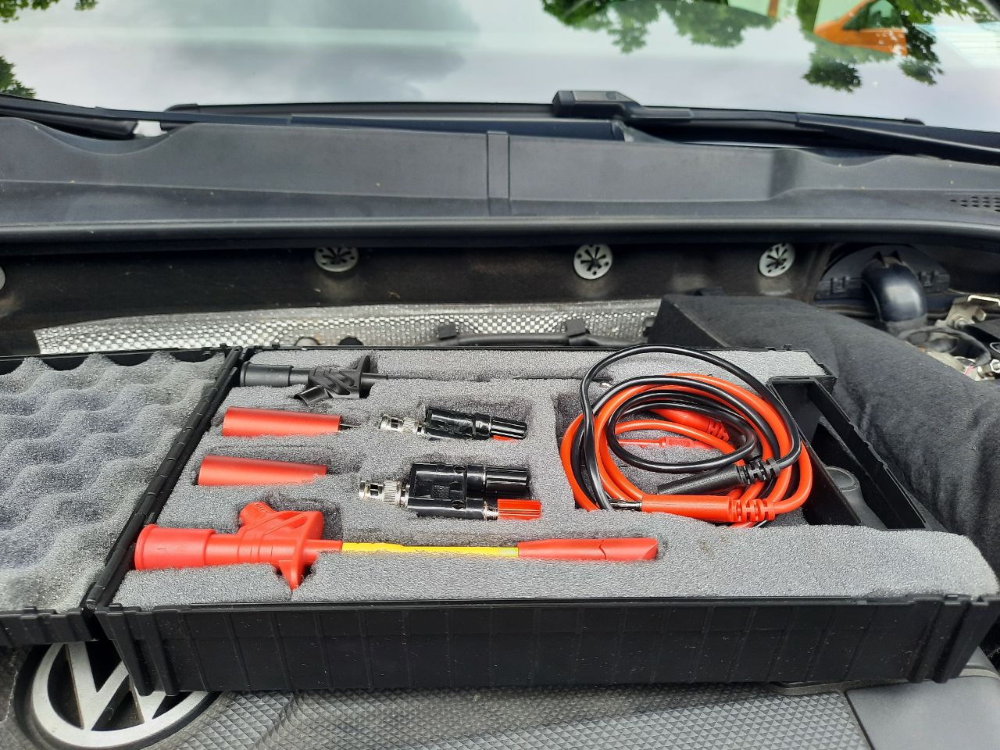
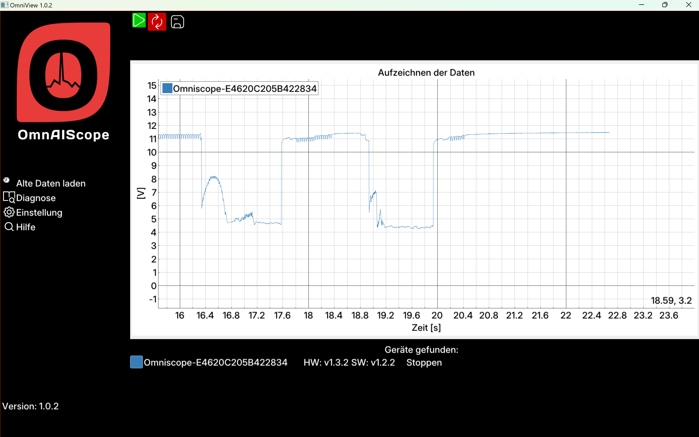
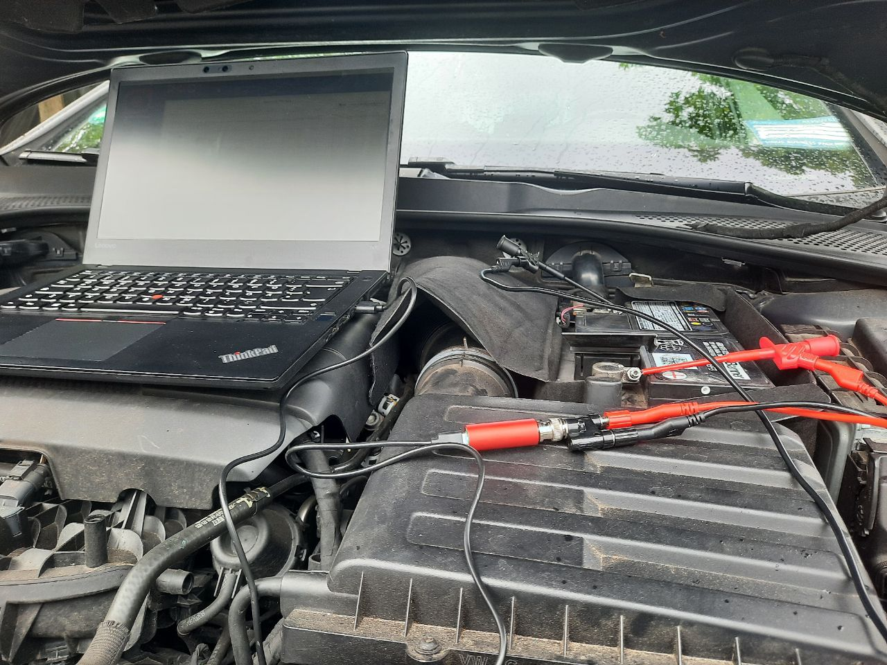
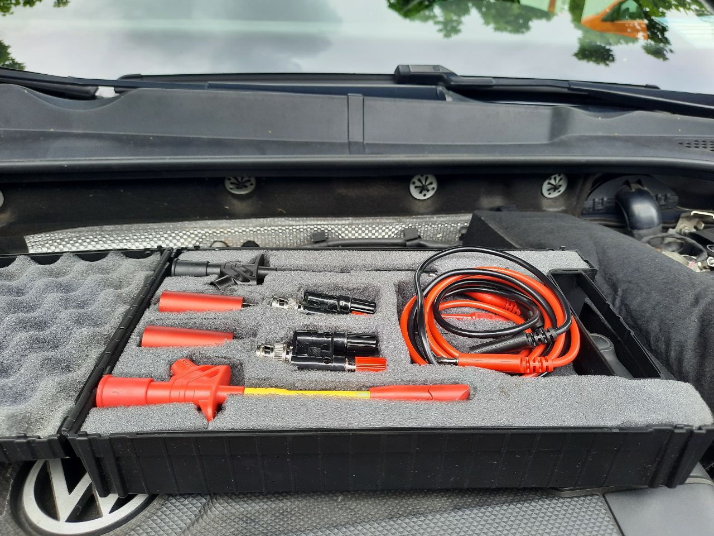
OmnAIScope Händler
Das OmnAIScope
Unsere Angebote

Unser Ziel
Effiziente, kostensparende und präzise Fahrzeugdiagnose für jede Werkstatt.
Seien Sie Teil der Zukunft der Fahrzeugdiagnose!
Informationen
Support
Newsletter
Shop